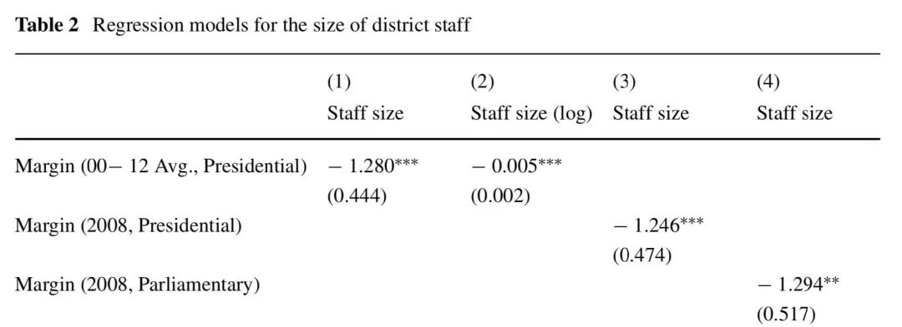
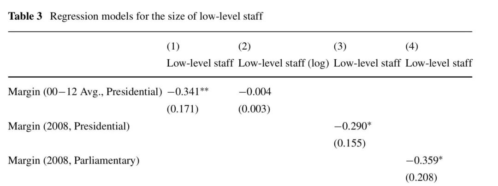

BarryDriscoll|为什么政治竞争能够强化庇护主义？
收录于合集
文献来源： Barry ****Driscoll,“Why Political Competition Can Increase Patronage,” Studies in Comparative International Development , 2018, 53(4),pp.404-427.
作者简介： Barry Driscoll，美国格林内尔学院（Grinnell College）政治学系助理教授，个人网页参见：https://barrydriscoll.wordpress.com/
一、 庇护理论与竞选
庇护主义， 在这里被界定为用公共职位奖赏政党工作者的政治忠诚。 这一现象在发展中国家普遍出现。 它削弱了民主负责的机制，强化了不平等，并且催生了那些妨碍发展的公共政策 (Khemani 2010; Devarajan et al. 2009)。 在撒哈拉以南的非洲，庇护网络更是其政党体系的根本特征。
很多学者认为强化政治竞争是解决庇护政治的方法（Diaz-Cayeros & Magaloni 2003，Grzymala-Busse 2007， Monti-nola and Jackman 2002，Garc ́ıa-Guadilla and Pe ́rez 2002）。然而情况并没有那么简单，竞争性选举可能会强化一些庇护主义的形式。来自对民主化而非仅仅针对民主制度的研究则认为激烈的选举竞争可能会强化社会紧张局势。贝茨30年前就针对非洲情境提出了"选举竞争引发族群冲突"的论断。
目前，学界对政治竞争和庇护主义之间的关系的认识依然是含混不清的，我们有理由期待选举责任制质量和强度的强化会减少庇护政治的现象，但是选举似乎也可能导致不稳定、政治极化甚至是掠夺性政府。
二、加纳的情境
和大多数发展中国家一样，在过去20多年来，加纳实行了治理权责的分权改革。对于大多数国民而言，所谓政府主要指的是地方政府。地方政府有权在辖区内收取税收，制定发展规划并执行发展项目。中央政府则主要控制诸如学校课程、预算、安全和医疗等宏观政策。地方政府拥有使用地方税收来雇佣低层级雇员并开展自主项目的权力，这两者都是实施庇护主义的寻租机会。
地方政府的关键人物是行政长官，他由总统提名并经过地方议会批准，因此所有地方政府都是执政党的成员。地方行政领导虽然被认为是为执政党效力，但是他也同时来自于执政党的地方组织，这也就意味着他们必须通过在党的地方网络中积累追随者来强化自己的权力。也正因为所有地方政府都由同一个执政党控制，作者在这篇研究中得以将政党意识形态作为控制变量。
全国性的精英往往要求自己的地方合作伙伴有能力为自己输送选票并维持当地秩序以便自己有效施政。 在加纳，这一任务的主要承担者就是政党积极分子(political party activist)。这些积极分子和政治掮客(broker)不同，尽管他们的主要工作都是在政党和选民之间建立有效联系，但是前者主要是一些体力活，后者更多是提供地方性知识。积极分子们的主要任务包括让人们参加集会、筹划抗议、骚扰反对派以及进行选举舞弊等。这些积极分子的目标则在于物质回报，尤其是得到诸如清洁工、保安、公厕收费员这样的公共职位。
但并不是所有积极分子都能够公平的得到这样的回报。 在那些政治竞争不激烈的地方，地方行政领导往往不那么关心其积极分子的诉求是否得到满足。 如果政党积极分子在竞争性强的地区中起了重要作用，那么显然这些地区行政领导的执政地位也会因高竞争性而不稳固。 一般而言，地方行政首脑与国家总统的一届任期一致，都是四年。但是在作者所收集的数据样本中，在2009-2012年间，一些地区有过两任或更多行政领导。在2000-2012年间，总统选举中，选票相差5%以内的地区里，有20%的地区在2009-2012年间出现过一任以上的行政领导；在那些选票差距超过5%的地区（即政治竞争压力小），只有7%的地区出现过这种现象。
还有一个问题是，为什么庇护主义的对象是政党积极分子而不是选民？根据非洲晴雨表（Afrobarometer）2005-2006年的调查数据，93%的加纳认为自己从未用选票交换物质利益。而在贝宁、乌干达和肯尼亚，分别有33%、35%和41%的受访者提到自己至少经历过一次选票收买的行为。庇护主义在加纳并不是不存在，由于加纳选民很少变更自己的选举偏好，因此加纳的庇护主义只是通过惠及政党积极分子而非选票收买的形式。 选民投票偏好的稳定和政党制度化水平有很大关系。 在政党制度化水平高的国家，政党的表现不会在不同选举中呈现剧烈的波动，而且他们总是期望与自己的对手有着结构性的区别。 再加上，加纳单议席选区制让新党派的准入门槛很高，国内政局长期被两大政党（NPP和NDC）主导。族群政治的显著也让选民很难去支持其他党派。而在弱政党制度化水平下，政党们急于追逐任何没有政党联结的选民。因此，作者认为， 政党制度化水平决定政党拿出多少资源用于取悦选民。
那么政治竞争会对庇护主义产生什么影响呢？接下来作者展开了实证分析。
三、实证分析
由于地方政府在决定低层级的政府雇员的雇佣上有自主权，因此这篇文章主要关注了以公共职位分配换取政治支持的庇护形式。 为了解决政治竞争和庇护主义之间关系的问题，作者打造了一个由200名研究者组成的调研队伍，在整个加纳收集数据。
因变量
为了测量作者所关注的庇护形式，其因变量为雇员规模，以及低层级雇员规模。在2012年，这类低层级雇员的年收入为1650美元，略高于加纳的人均GNI。
解释变量
加纳的选举竞争主要是在NPP和NDC这两个政党之间展开。作者用2000-2012年间，两党的总统候选人在该地区的选票差异来测量该地的政治竞争程度。在这12年间共发生了四次选举，为了保证结果的稳健性，作者还单独拿出2008年间的选票差异数据同样作为解释变量。同样为了保证结果的稳健性，作者还使用议会选举的数据测量地方的政治竞争程度。不过使用议会数据存在的问题是，议员选举中还存在着独立候选人的情况。
结果
表二主要是以地方政府总体雇员规模为因变量的OLS回归的结果，在全部四个模型中，用来表示政治竞争程度的解释变量都与用于测量庇护政治的因变量呈显著的负相关关系。表三中，因变量被替换为低层次雇员的规模，除了模型2中将因变量做log转换后统计显著性消失外，其他三个模型都显示两者呈显著的负相关关系，与作者的理论预期一致。
 
四、结论
本文发现庇护主义与选举竞争的烈度存在显著的正相关。 这一发现是对那些将政治竞争与治理绩效联系起来的研究的直接挑战。 此外，本文还发现选票收买倾向于出现在政党制度化比较弱的国家。这对政党体系与庇护主义类型的理论提供了一个初步的检验。现有文献在探讨庇护主义的变化时明显缺乏对于政党体系的探讨。未来的研究应该在这一方面进一步推进。由此，我们也可以推论， 某一种类型的庇护主义的削弱并不一定意味着整体上庇护主义水平的下降。
**
**
**
**
编译：赵德昊
审读：杨端程
编辑：吴温泉 **
**


政文观止
微信扫一扫赞赏作者 __赞赏
已喜欢，对作者说句悄悄话
取消 __
发送给作者
发送
最多40字，当前共字
上一页 1/3 下一页
长按二维码向我转账
受苹果公司新规定影响，微信 iOS 版的赞赏功能被关闭，可通过二维码转账支持公众号。